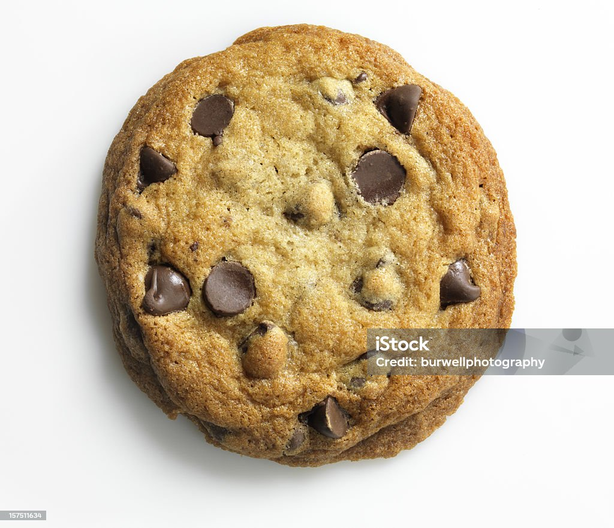

Chocolate Chip Cookies

-
First Step: Preheat oven to 375°F. Mix flour, baking
soda and salt in medium bowl. Set aside.
Beat butter and sugars in large bowl with electric mixer on medium
speed until light and fluffy.
Add eggs and vanilla; mix well. Gradually beat in flour mixture on low
speed until well mixed.
Stir in chocolate chips and walnuts, if desired.
-
Second Step: Drop by rounded tablespoons about 2
inches apart onto ungreased baking sheets.
-
Third Step: Bake 8 to 10 minutes or until lightly
browned. Cool on baking sheets 1 minute.
Remove to wire racks; cool completely.
-
Final Step For a spooky twist this Halloween, turn
chocolate chips into spiders! Before baking,
press a few extra chocolate chips into the top of each cookie. Remove
hot baked cookies from
the oven and let stand 2 to 3 minutes. Using a toothpick, draw 8
spider legs on each exposed
chocolate chip by pulling the melted chocolate out into squiggly
lines.
List of Ingredients
- 3 1/4 cups flour
- 1 teaspoon baking soda
- 3/4 teaspoon salt
- 1 1/3 cups butter, softened
- 1 1/4 cups granulated sugar
- 1 cup firmly packed light brown sugar
- 2 eggs
- 4 teaspoons pure vanilla extract
- 1 package (12 ounces) semi-sweet chocolate chips